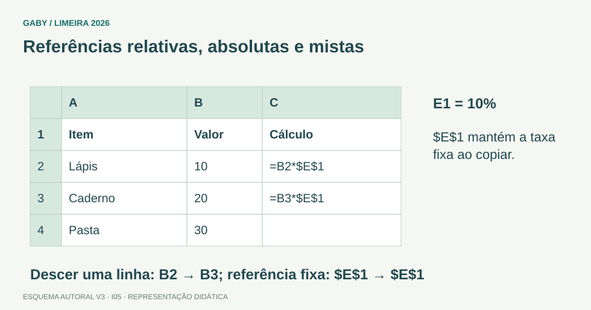

Objetivos do módulo
- Entender célula, linha, coluna, intervalo e pasta de trabalho.
- Dominar referências relativas, absolutas e mistas.
- Prever o efeito de copiar fórmulas.
Referências relativas, absolutas e mistas

Descrição em texto do esquema
- A1: Coluna e linha podem variar.
- $A$1: Coluna e linha ficam fixas.
- $A1 / A$1: Fixa somente coluna ou linha.
Oficina visual · aplique o esquema
Ao copiar =B2*$E$1 de C2 para C3, como fica a fórmula?
Atividade autoral complementar da V3. Registre sua resposta; a resolução está no arquivo de gabarito e revisão.
Mapa do conteúdo
1. Estrutura
Uma pasta de trabalho pode conter várias planilhas. Cada planilha tem linhas numeradas e colunas identificadas por letras. A interseção forma a célula: A1, C7, AA15. Intervalo A1:A5 indica células contínuas entre A1 e A5.
2. Tipos de referência
| Referência | Comportamento ao copiar |
|---|---|
| A1 | linha e coluna relativas |
| $A$1 | linha e coluna fixas |
| $A1 | coluna fixa, linha relativa |
| A$1 | coluna relativa, linha fixa |
3. Fórmula e conteúdo
Fórmulas começam normalmente com =. Se A1=10 e B1=20, =A1+B1 resulta em30. Ao copiar para a linha seguinte, referências relativas ajustam-se para A2+B2.
4. Intervalos e operadores
Dois-pontos define intervalo contínuo: A1:A10. Ponto e vírgula, em instalações em português, é frequentemente separador de argumentos de funções, não operador de intervalo. A sintaxe pode variar conforme configuração regional.
5. Erros comuns
Referência circular ocorre quando fórmula depende dela mesma, direta ou indiretamente. Erros como #DIV/0! indicam divisão por zero; #N/D pode significar valor não disponível em funções de busca.
Exemplos resolvidos passo a passo
Exemplo 1
Situação: Em C1, fórmula =A1*$B$1. Ao copiar para C2, qual fica?
Exemplo 2
Situação: O que significa B2:D4?
Pegadinhas e erros frequentes
- Confundir planilha com pasta de trabalho.
- Esquecer $ ao usar taxa fixa.
- Achar que $ representa moeda dentro da referência.
Resumo de prova
- Célula = coluna+linha.
- A1 relativa; $A$1 absoluta.
- Referências mistas fixam só linha ou coluna.
- Fórmula começa com =.
- Intervalo contínuo usa :.
Exercícios do módulo
Resolva sem consultar o arquivo de gabarito. As questões são autorais e construídas para treinar os conceitos do edital.
- linha C coluna5
- arquivo C5
- slide5
- coluna C linha5
- mista de linha
- texto
- absoluta
- relativa
- nenhuma
- linha 1
- coluna A
- ambas
- coluna A
- linha1
- ambas
- nenhuma
- uma única célula
- arquivo
- gráfico
- intervalo
- somente gráficos
- nenhuma fórmula
- várias planilhas
- somente uma célula
- & apenas
- =
- #
- @ apenas
- =A2
- =A1 sempre
- =B1
- =$A$1
- arquivo corrompido necessariamente
- impressão
- senha
- divisão por zero
- somar
- subtrair
- fixar referência
- formatar moeda necessariamente
Quando terminar, abra Informática 05 - Excel - Células, Linhas, Colunas e Referências - Gabarito e Revisão.
Checklist de domínio
- ☐ Entender célula, linha, coluna, intervalo e pasta de trabalho.
- ☐ Dominar referências relativas, absolutas e mistas.
- ☐ Prever o efeito de copiar fórmulas.
Meta do módulo: 80% ou mais nas questões, sem depender de consulta.
Referências e conteúdos auxiliares
- Microsoft — Criar ou alterar uma referência de célulaReferências usadas em fórmulas e intervalos de células.
- Microsoft — Auxílio e aprendizado do ExcelCentral de ajuda para tabelas, filtros, classificação, gráficos e fórmulas.
Referências externas de apoio consultadas para a V3 em 27/09/2026. A origem das questões é o material autoral do projeto; estes links não indicam que uma instituição publicou ou validou os exercícios. As páginas externas precisam de internet. Em informática, confira a versão do programa; em legislação, observe o recorte e as regras de atualização do edital.